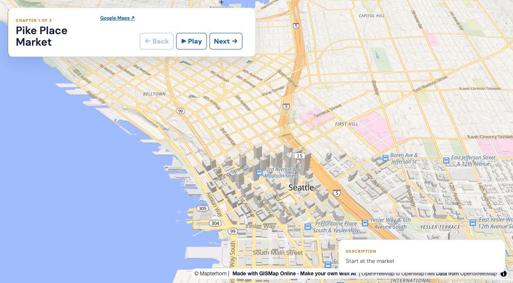

AI prompt example
A coffee crawl as a guided tour
Plot a coffee crawl around Seattle's Pike Place and Capitol Hill.

Prompt
Plot a coffee crawl around Seattle's Pike Place and Capitol Hill.
Link
https://gismap.online/?tourOnly=1#tour=json:%7B%22title%22%3A%22Seattle%20coffee%20crawl%22%2C%22autoplay%22%3Atrue%2C%22stops%22%3A%5B%7B%22name%22%3A%22Pike%20Place%20Market%22%2C%22caption%22%3A%22Start%20at%20the%20market%22%2C%22lat%22%3A47.60971%2C%22lon%22%3A-122.3422%2C%22zoom%22%3A15%2C%22tilt%22%3A45%2C%22heading%22%3A0%2C%22basemap%22%3A%22open-liberty%22%2C%22seconds%22%3A6%7D%2C%7B%22name%22%3A%22Pine%20Street%22%2C%22caption%22%3A%22Walk%20uphill%20along%20Pine%22%2C%22lat%22%3A47.6149%2C%22lon%22%3A-122.3284%2C%22zoom%22%3A15%2C%22tilt%22%3A45%2C%22heading%22%3A0%2C%22basemap%22%3A%22open-liberty%22%2C%22seconds%22%3A6%7D%2C%7B%22name%22%3A%22Capitol%20Hill%22%2C%22caption%22%3A%22Finish%20at%20Cal%20Anderson%20Park%22%2C%22lat%22%3A47.6174%2C%22lon%22%3A-122.3195%2C%22zoom%22%3A15%2C%22tilt%22%3A45%2C%22heading%22%3A0%2C%22basemap%22%3A%22open-liberty%22%2C%22seconds%22%3A6%7D%5D%7DWhat the agent says
The stops are neighbourhood waypoints, not checked cafés; swap in the shops you want and check their coordinates.
Status reached
loaded, checked 2026-11-01 in headless Chrome. Live services change, and intended features, filter and reopening were not separately verified.